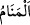

Zühretü’r-riyâz’da şöyle der: ‘Can alma’ Allah’a izâfe edildiği zaman, rûhun
bedenden ayrılması emrini vermesi demektir. Bütün melekler bir araya gelseler onu
bedenden çıkarmaya muktedir olamazlar. Allah ruha bedene girme emrini verdiği gibi
çıkmasını da emreder. ‘Can alma’ meleklere izâfe edildiği zaman ise bizzat bu işi
üstlenmek anlamına gelir. Ruh hançereye ulaştığı zaman ölüm meleği ruhu, ya îman ya
da küfür üzere alır.”
Şu kadarı var ki Allah Teâlâ bazı seçkin kullarının (havâs) canını alma işini bizzat
üstlenmiştir. Nitekim rivâyet edilir ki ölüm meleği Hz. Fâtıma (r.anhâ)’nın rûhunu
almaya gelince Hz. Fâtıma onun ruhunu almasına rızâ göstermedi. Bunun üzerine Allah
onun ruhunu kabz etti. Hz. Peygamber (a.s.)’ın ruhunu ise ölüm meleği almıştır. Çünkü o
ümmetinin önderidir.
Zünnûn Mısrî (k.s.) ise şöyle duâ etmiştir: “İlâhî! Beni ölüm meleğine bırakma,
ruhumu bizzat Sen al! Beni (cennet meleği) Rıdvân’a bırakma, ikramını bizzat kendin
yap. Beni (cehenem zebânîsi) Mâlik’e de bırakma, azâbını bizzat kendin yap!” Her hal ü
kârda Allah’ın ihsânını niyaz ederiz!
“Ölmeyenin de uykusunda iken” canını alır. “__WORD__ ve “__WORD__in ikisi de uyku
anlamındadır ki beyin sinirlerinin beyne yükselen buharın rutûbetinden dolayı gevşeyip
rahatlamasıdır. Uykunun bu âyette belirtildiği üzere ölüm vâki olmaksızın Allah’ın nefsi
kabzetmesi olduğu da söylenmiştir. Uykunun hafif bir ölüm, ölümün ise ağır bir uyku
olduğu da söylenmiştir. Bütün bu târiflerin hepsi farklı bakış açılarına göre doğrudur.
Mânâ ise şöyledir: Ölmeyen nefslerin de uykuları esnâsında canını alır. Yâni,
bedenlerle bağlarını ve tasarrufunu bâtınen değil, zâhiren koparmak sûretiyle uyuduğu
sırada nefisleri kabz eder. Uyuyan kimse, hayvânî ruhunun hâlâ kendisinde olması
sâyesinde nefes alıp verir ve hareket eder. Ama insânî ruhu bulunmadığı için aklını
kullanamaz ve temyiz gücü yoktur. Uyku, sûfîlerin insilâh hâline benzer. Bir farkla ki
uyanık iken münselih olan/insilâh hâlini yaşayan kimse, uyku hâlinde kendisi uyuduğu
halde münselih olandan hâl ve şühûd/müşâhede bakımından daha güçlüdür.
Uyuyanların temyiz gücüne sâhip olmamaları bakımından ölülere benzetilmesi
sûretiyle ölüm ve uyku canını almak olarak ifâde edilmiştir. Bu yüzden bir rivâyette
“Uyku ölümün kardeşidir.”[121] diye vârid olmuştur.
Hz. Ali (r.a.)’den rivâyet edildiğine göre uyku sırasında ruh çıkar, fakat şuası cesedde
kalır. İşte kişinin rüyâ görebilmesi de bu sâyededir. Uyandığı zaman ruh olabilecek en
sür’atli şekilde cesedine geri döner.
Rivâyet edilir ki uyku sırasında mü’minlerin ruhları göğe yükselir. Onlardan temiz
durumda, yâni abdestli olanlara Arş’ın altında Allah’a secde etme izni verilir. Temiz
olmayanlara ise bu izin verilmez. İşte rüyâsının sâdık olması, Allah ile muâmeleleri ve
karşılıklı konuşmalarının meydana gelmesi için abdestli olarak uyumak müstehab
görülmüştür.
Bir âlim şöyle der: Allah ruhları latîf, bedenleri ise kesîf olarak yaratmıştır. Ruhlara